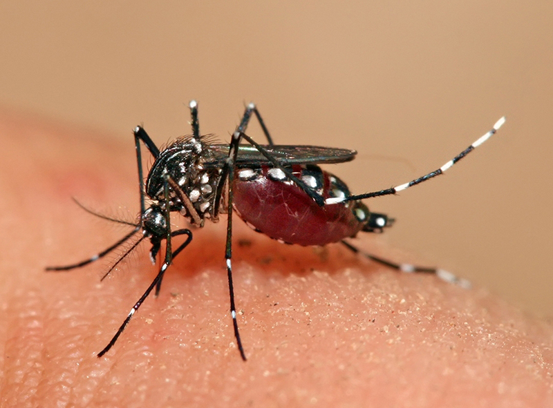
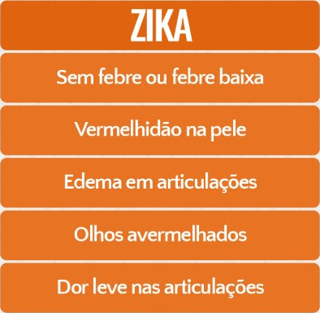
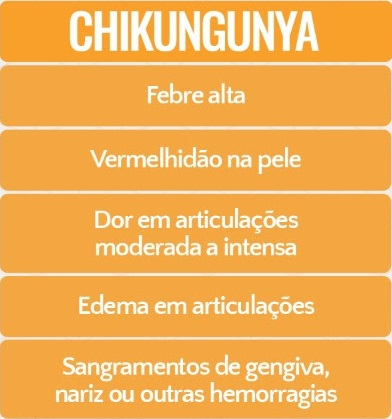
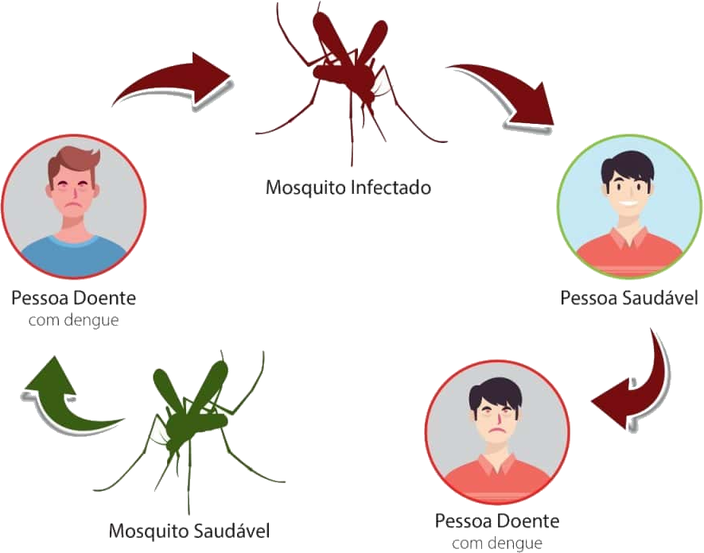
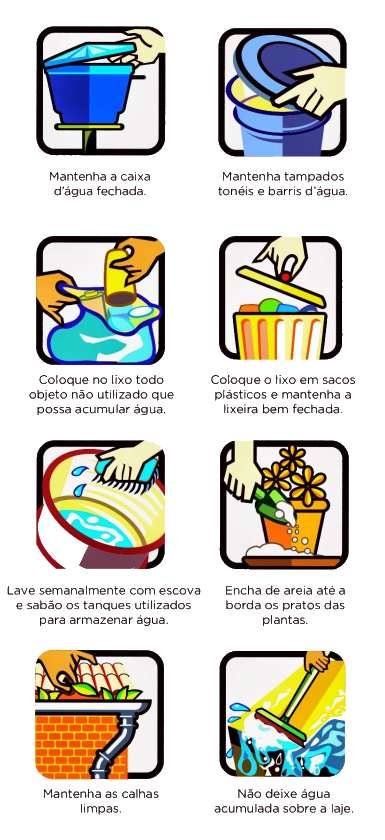
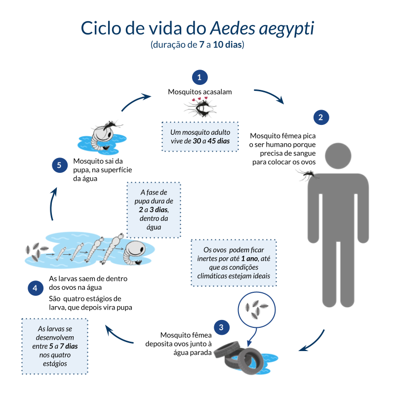
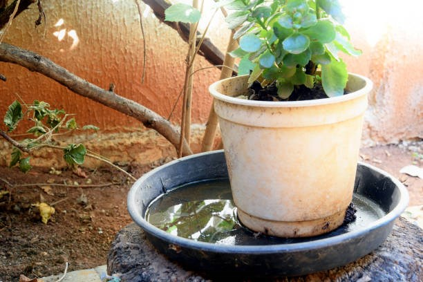
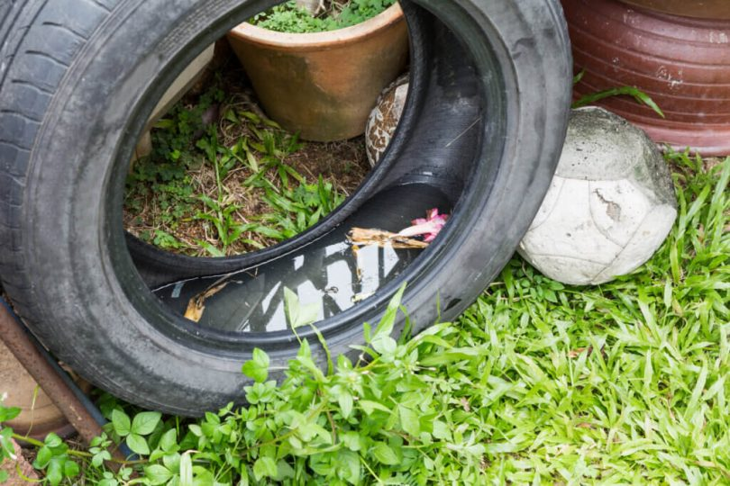
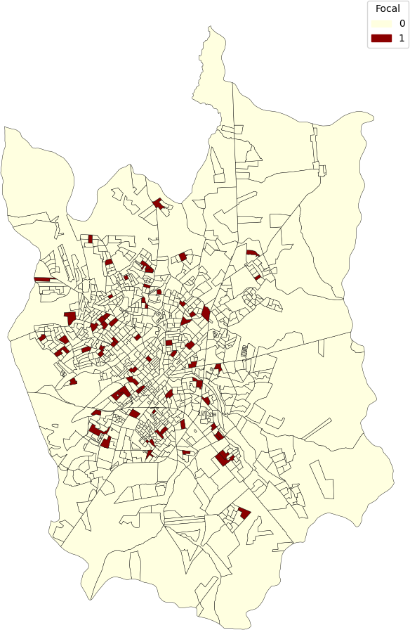
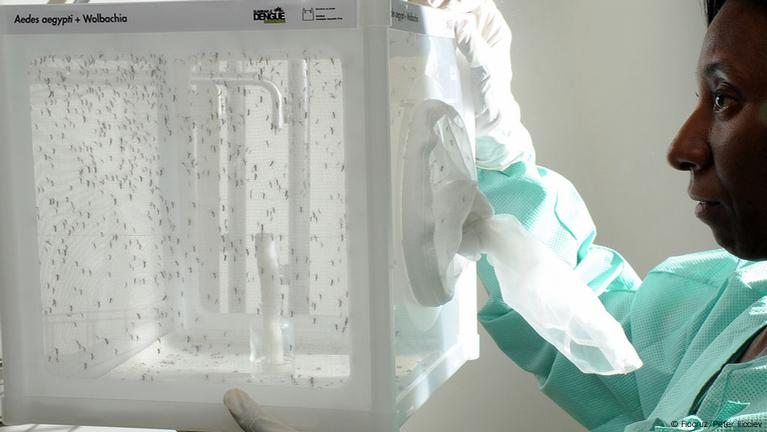

Wiki Aedes aegypti
Esta wiki foi criada como projeto da disciplina PCS3643 (Lab. de Engenharia de Software) da EPUSP, com o objetivo de compartilhar informações importantes sobre o Aedes aegypti, as doenças que ele propaga, seus meios de transmissão e métodos de prevenção, além de diversas outras curiosidades. Navegue pelos tópicos abaixo para aprender mais!
Introdução
O Aedes aegypti é um mosquito originário da África, conhecido por ser um dos principais vetores de doenças infecciosas tropicais, como dengue, zika, chikungunya e febre amarela, que afetam milhões de pessoas a cada ano.
Sua capacidade de adaptação ao ambiente urbano e o ciclo de vida curto tornam-no uma grande preocupação para a saúde pública em regiões tropicais e subtropicais. Esse mosquito se reproduz principalmente em áreas com água parada, como pneus, vasos de plantas e caixas d'água destampadas, locais que proporcionam as condições ideais para o desenvolvimento de suas larvas. Fatores como mudanças climáticas, urbanização e comportamentos humanos influenciam a propagação deste mosquito e as doenças que ele transmite.
O controle do Aedes aegypti envolve ações preventivas, como a eliminação de criadouros, e medidas de combate, que vão desde campanhas educativas até o uso de inseticidas. Devido ao seu impacto significativo na saúde humana, o estudo e a prevenção do Aedes aegypti são prioridades para governos e organizações de saúde em todo o mundo.


Doenças
O Aedes aegypti é o vetor de várias doenças graves que impactam significativamente a saúde pública. As principais doenças transmitidas por este mosquito incluem dengue, zika, chikungunya e febre amarela.
A dengue é uma das doenças mais comuns e pode causar sintomas que variam de febre leve a hemorragias severas e choque, sendo responsável por milhares de internações anualmente.
A zika, por sua vez, atraiu atenção mundial devido à sua associação com casos de microcefalia em recém-nascidos, o que aumenta sua gravidade e a necessidade de prevenção.
A chikungunya, caracterizada por dores articulares intensas e duradouras, também representa uma preocupação crescente, especialmente em regiões com altas taxas de transmissão.
A febre amarela, embora menos comum em áreas urbanas, pode ser fatal se não tratada a tempo, causando surtos em áreas de mata e aumentando o risco para comunidades próximas.
Cada uma dessas doenças apresenta sintomas específicos e, em alguns casos, pode levar a complicações graves, tornando essencial a conscientização e a educação da população sobre os riscos associados, bem como a importância do controle do mosquito para evitar a transmissão.


Transmissão
A transmissão de doenças causadas pelo Aedes aegypti ocorre principalmente através da picada de fêmeas infectadas que buscam sangue para nutrir seus ovos.
Quando uma fêmea pica uma pessoa que já está infectada com vírus como o da dengue, zika ou chikungunya, o mosquito absorve o vírus com o sangue. Após um período de incubação, que pode variar de dias a semanas, o vírus se multiplica no organismo do mosquito e é posteriormente transmitido para novos hospedeiros durante as picadas subsequentes.
A dengue, uma das doenças mais comuns transmitidas pelo Aedes aegypti, pode se manifestar de forma leve a severa, enquanto a zika tem sido associada a graves complicações em recém-nascidos, como a microcefalia. A chikungunya, por sua vez, é caracterizada por dores articulares intensas que podem durar meses. Além disso, a febre amarela, embora menos frequente em áreas urbanas, também pode ser transmitida por este vetor.
A alta capacidade reprodutiva do mosquito, aliada à urbanização e à falta de medidas adequadas de controle, potencializa o risco de surtos das doenças que ele transmite, ressaltando a necessidade de estratégias eficazes de prevenção e controle para proteger a saúde pública.
Ciclo de Transmissão
Combate e Prevenção
O combate e a prevenção contra o Aedes aegypti exigem ações coordenadas que incluem tanto a eliminação de criadouros quanto o uso de tecnologias para reduzir a população do mosquito.
As principais medidas preventivas envolvem eliminar locais que possam acumular água parada, onde o mosquito deposita seus ovos e desenvolve seu ciclo de vida. Isso inclui tampar caixas d’água, limpar calhas, remover recipientes desnecessários e manter pneus, garrafas e vasos de plantas em locais secos ou cobertos, especialmente durante períodos chuvosos.
Visitas técnicas de agentes de saúde são uma parte fundamental desse esforço, pois permitem a inspeção de residências e locais públicos em busca desses focos de água parada onde o mosquito pode se reproduzir. Durante essas visitas, os agentes orientam a população sobre as práticas adequadas para evitar o acúmulo de água, como tampar caixas d'água, descartar recipientes que possam acumular água e manter calhas limpas.
Em áreas com altos índices de infestação, o uso do fumacê é uma medida complementar de controle, na qual inseticidas são aplicados na forma de névoa para eliminar mosquitos adultos e reduzir temporariamente a quantidade de vetores em circulação. O fumacê, no entanto, é mais eficaz quando combinado com outras ações preventivas e de conscientização, uma vez que seu efeito é temporário e não age sobre os ovos e larvas do mosquito.
A integração de Visitas técnicas, controle químico e medidas educativas, junto ao envolvimento da população, é essencial para uma estratégia eficaz de combate e prevenção contra o Aedes aegypti, diminuindo assim a transmissão de doenças como dengue, zika, chikungunya e febre amarela, que representam graves riscos à saúde pública.

Ciclo de Vida
O ciclo de vida do Aedes aegypti é composto por quatro fases principais: ovo, larva, pupa e adulto, e ocorre geralmente em locais com água parada, onde o mosquito encontra condições ideais para se desenvolver.
Após o acasalamento, as fêmeas depositam seus ovos em superfícies úmidas próximas a fontes de água; esses ovos podem permanecer viáveis por até um ano, esperando condições adequadas de umidade para eclodir. Quando em contato com a água, os ovos dão origem às larvas, que se alimentam de matéria orgânica presente no ambiente aquático. Depois de um período que pode variar de dias a semanas, dependendo da temperatura, as larvas se transformam em pupas, estágio no qual passam por uma rápida metamorfose.
Finalmente, a pupa se transforma em um mosquito adulto, pronto para voar e, no caso das fêmeas, buscar sangue para nutrir seus futuros ovos. Esse ciclo de vida curto e eficiente facilita a reprodução acelerada do Aedes aegypti, especialmente em climas quentes e úmidos, o que contribui para a disseminação das doenças que ele transmite.

Criadouros
O Aedes aegypti adapta-se especialmente bem a ambientes urbanos, onde encontra abundância de locais propícios para reprodução e desenvolvimento.
Diferente de outros mosquitos, ele prefere depositar seus ovos em pequenos recipientes artificiais que acumulam água, como pneus, vasos de plantas, garrafas, caixas d'água destampadas e qualquer outro objeto que permita o acúmulo de água parada. Esse comportamento o torna comum em áreas residenciais, pois essas condições são facilmente encontradas em quintais, varandas e até mesmo dentro das casas.
O mosquito é mais prevalente em regiões tropicais e subtropicais, onde o clima quente e úmido favorece seu ciclo de vida, permitindo uma reprodução rápida e eficaz. No entanto, adaptações ao clima e ao ambiente urbano permitiram que ele se espalhasse por diversas áreas, incluindo zonas mais temperadas, aumentando o risco de transmissão de doenças em zonas urbanas e suburbanas.
A presença do Aedes aegypti em áreas habitadas por humanos aumenta a proximidade com seu hospedeiro, facilitando a transmissão de doenças como dengue, zika, chikungunya e febre amarela. Essa proximidade entre o mosquito e os seres humanos é um dos principais fatores que contribuem para o seu impacto significativo na saúde pública.


Epidemiologia
A epidemiologia do Aedes aegypti envolve o estudo da distribuição, frequência e fatores de risco relacionados às doenças transmitidas por esse mosquito, que incluem dengue, zika, chikungunya e febre amarela.
Originário de regiões tropicais da África, o Aedes aegypti se espalhou amplamente para outras partes do mundo, especialmente para áreas tropicais e subtropicais, devido a fatores como urbanização desordenada, mudanças climáticas e aumento das viagens internacionais.
Esse mosquito adapta-se com facilidade ao ambiente urbano, aproveitando pequenos recipientes com água parada para se reproduzir. A transmissão de doenças ocorre através da picada das fêmeas infectadas, que buscam sangue humano para nutrir seus ovos. Em muitos países da América Latina, Sudeste Asiático e África, o Aedes aegypti tem sido responsável por epidemias recorrentes e de grande escala, gerando sérios problemas de saúde pública e sobrecarregando os sistemas de saúde.
A variabilidade sazonal e climática também influencia a ocorrência de surtos, com períodos de maior temperatura e umidade favorecendo o aumento da população do mosquito. Por isso, o estudo dessa epidemiologia é crucial para entender o comportamento do vetor e para o desenvolvimento de estratégias eficazes de controle e prevenção.
Distribuição Geográfica de Áreas de Foco em São Jose do Rio Preto
Impactos Sociais
Os impactos do Aedes aegypti são significativos e abrangem diversas esferas, incluindo saúde pública, econômica e social.
Como vetor de doenças como dengue, zika, chikungunya e febre amarela, o Aedes aegypti contribui para a ocorrência de epidemias que resultam em milhões de casos de infecções anualmente, colocando pressão sobre os sistemas de saúde, que muitas vezes ficam sobrecarregados com internações e tratamentos.
Além do sofrimento humano e da mortalidade associada a essas doenças, os custos diretos e indiretos para o sistema de saúde e para as economias locais são substanciais, abrangendo desde gastos com medicamentos e hospitalização até a perda de produtividade devido a incapacidades e afastamentos do trabalho.
Socialmente, o medo de contrair doenças transmitidas pelo mosquito pode impactar a qualidade de vida das comunidades, levando a mudanças nos comportamentos cotidianos e afetando a mobilidade urbana.
A necessidade de campanhas de conscientização e a implementação de medidas de controle e prevenção também exigem recursos e esforços contínuos, refletindo a importância de um engajamento colaborativo entre autoridades de saúde, governos e a população para mitigar os impactos do Aedes aegypti e proteger a saúde pública.

Inovações no Combate
Inovações relacionadas ao combate do Aedes aegypti têm surgido como uma resposta às crescentes preocupações com as doenças que esse mosquito transmite, visando melhorar as estratégias de controle e prevenção.
Uma das abordagens mais promissoras é o uso de mosquitos geneticamente modificados, que são projetados para reduzir a população de Aedes aegypti ao se reproduzirem com fêmeas selvagens e produzirem descendentes que não conseguem se desenvolver adequadamente. Outra inovação é a liberação de mosquitos infectados com a bactéria Wolbachia, que torna os mosquitos incapazes de transmitir patógenos como dengue e zika.
Além disso, o desenvolvimento de armadilhas inteligentes que utilizam atrativos olfativos e visuais para capturar mosquitos tem mostrado eficácia em ambientes urbanos.
Tecnologias de monitoramento, como aplicativos móveis e plataformas de dados geoespaciais, também têm sido implementadas para rastrear surtos e identificar áreas de risco, permitindo uma resposta mais ágil e direcionada.
Essas inovações, combinadas com educação e conscientização da população, representam um avanço significativo na luta contra o Aedes aegypti, contribuindo para a redução da incidência de doenças transmitidas por esse vetor e melhorando a saúde pública em geral.
